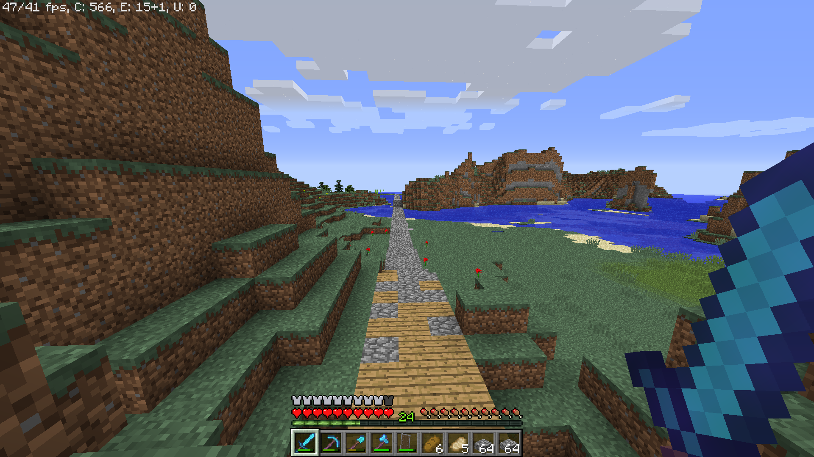
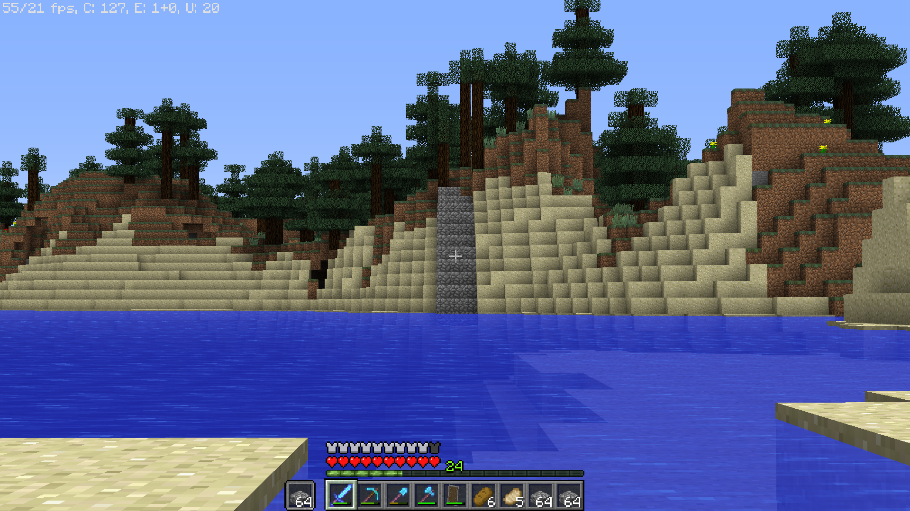
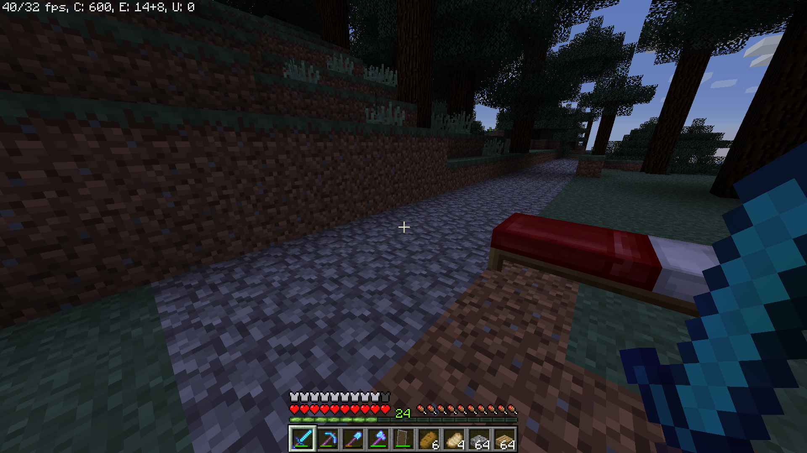
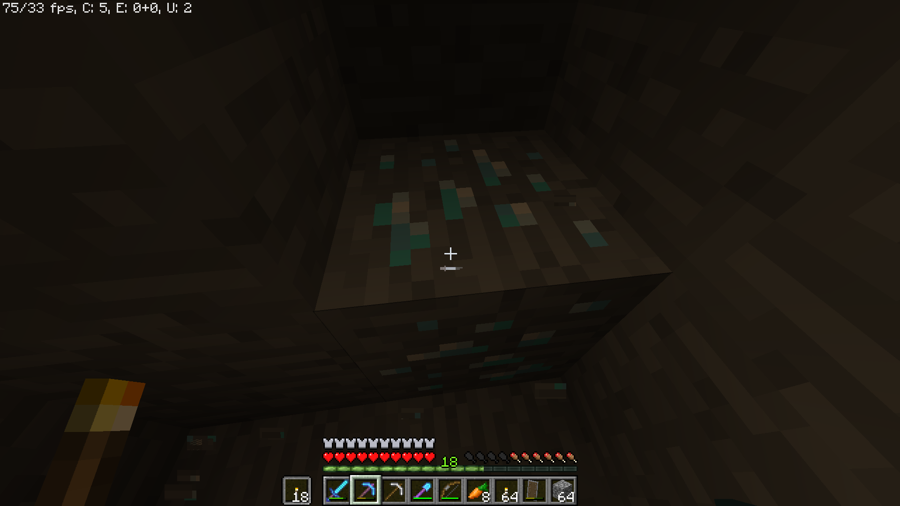
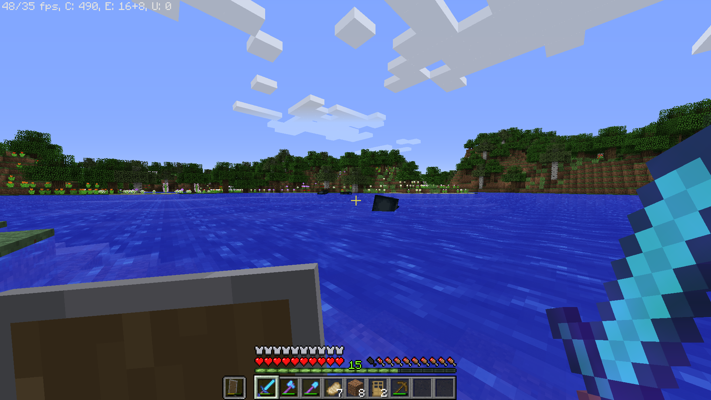
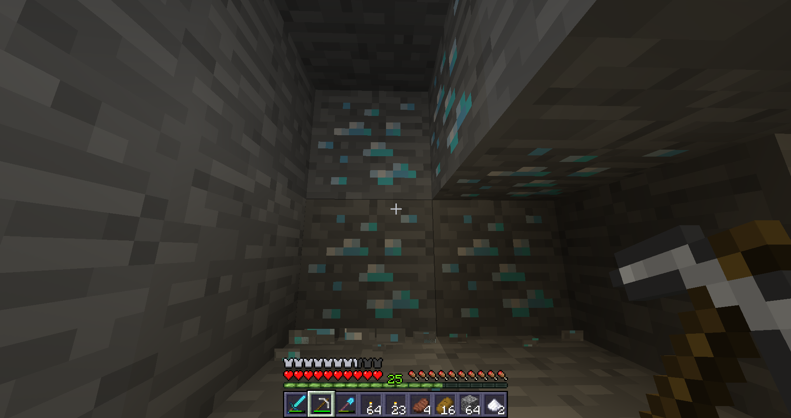
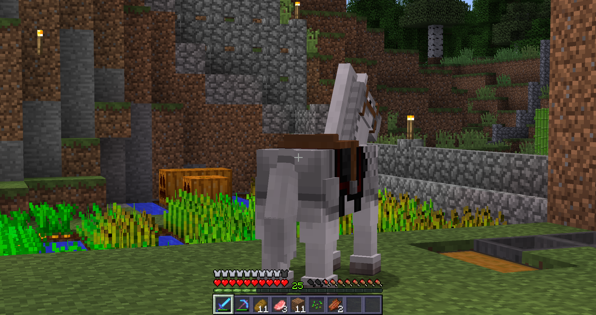
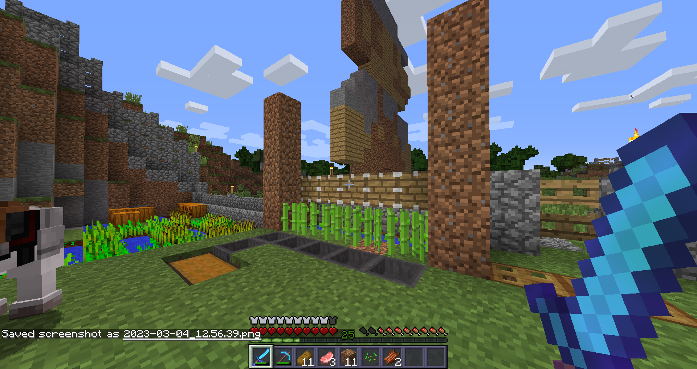
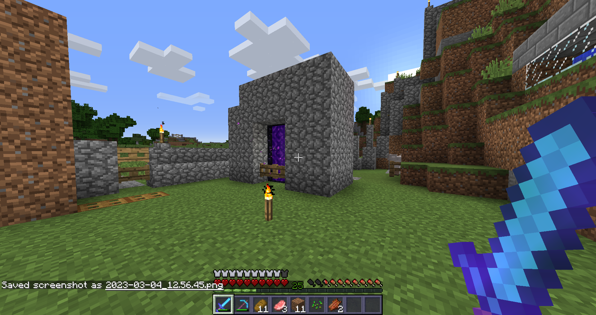

My Old Blog - Part 1
This is the blog I ran before I made the website's third revision. Take a look!
Saturday, April 27th, 2023
I got Terraria, Portal 1 & 2, & Sonic Adventure 2 two days ago. I am having tons of fun with those games right now.
I probably won't be playing on my Minecraft world any time soon.
Saturday, April 22nd, 2023
I am going to watch the mario movie in theaters today. I will update this post after I watch it. Btw happy earth day!
I am here right as I type. It is a great meal
EDIT: It was a good movie. I was referring to McDonalds because I went there after watching the movie. Lol.
Monday, April 17th, 2023
I am still unmotivated to play, but I have recently upgraded to Windows 11! So thats cool I guess.

Tuesday, April 9th, 2023
Two things, first of all, I might just be taking a little break from my Minecraft world to just play other games. I am getting bummed out and
I need some time off of it. Second, I just noticed I have been on Windows 10 21H2 for a long time and I never noticed lol.

Sunday, April 9nd, 2023
Happy Easter! Anyways, this week in my minecraft world, I further expanded my road. Even up to some village I found one time that I got one of
my horses at. I also got an idea from one of my irl friends to make something called a "Lord Tree" which is a birch tree. Why not you know?
He even told me some lore like how the warped & crimson tree/mushroom things in the 1.16+ nether are like 3rd/4th cousins twice removed
from the lord tree and aren't invited to family gatherings. Funny stuff lemme tell you. I will report back about my world next week! See ya!




Sunday, April 2nd, 2023
Well I got three things to cover today. So here it goes
First off, in terms of Minecraft, starting a week ago, I further expanded my road to 1.7+ terrain, & almost died several times while trying to
get through a mineshaft, not the first one I died in though. This is a different one.

Second off, I made a tumblr. Not to replace this blog, but to browse & stuff, say hi to me on there if you want.
Finally, I split the blog to 2 (3 if you count the posts before blog). There are posts after February on this page, posts between February to
December on the second, and posts on Social Media between January 2022 to December 2022.
So that's it. Have a good one!
Saturday, April 1st, 2023
Today is April Fools! I hope I got you if you went onto the main page on this website today!
Sunday, March 26th, 2023
For some reason, I have suddenly gained motivation to play on the world. So I am going to play. I am going to change something though. To make
sure I don't feel as much pressure, I think I will only post about my world weekly. I am also going to update to Release 1.9 to spice things
up. I'l upgrade to 1.10 on April 2nd. I hope you guys will agree with my changes. Anyways, I am going to get playing now.
Friday, March 24th, 2023
I have decided I need a little break from the website as a whole for a while. That is why I haven't posted anything in two weeks. I just wanted
to let you guys know. I am not sure if I will post anything else anytime soon. But i'l know when I know.
Tuesday, March 7th, 2023
I am going to take a break from my world because I got into Fortnite. Before you throw fire at me and stuff, The game truly isn't bad. It is the
cringy kids & the people who make content about the game that make the game look bad. By the way, sorry if I don't post anything in the blog for
a while. it might be a while before I post anything. It isn't because of Fortnite. It is because nothing interesting is happening & I don't
want posting here to be a burden to me after a while.
On other things, I have discovered that AI art is getting very realistic and that absolute disgusting AI art is being generated which is complete
sin. But on the other hand, you can make some funny and genuinely cool stuff with it.
Saturday, March 4th, 2023
I was just taking a little bit to take a break and to relax. I just felt like I needed it. Anyways, I have played on my MC World again! This time,
I got over 10 diamonds, got a second horse, and I made a more convient sugar cane farm. It'l become automatic probably around 1.11.




One more thing, we are almost at 3,000 views! Thank you for checking in to my blog and checking out my website as it is a nice hobby of mine to do
from time to time.
Part 2